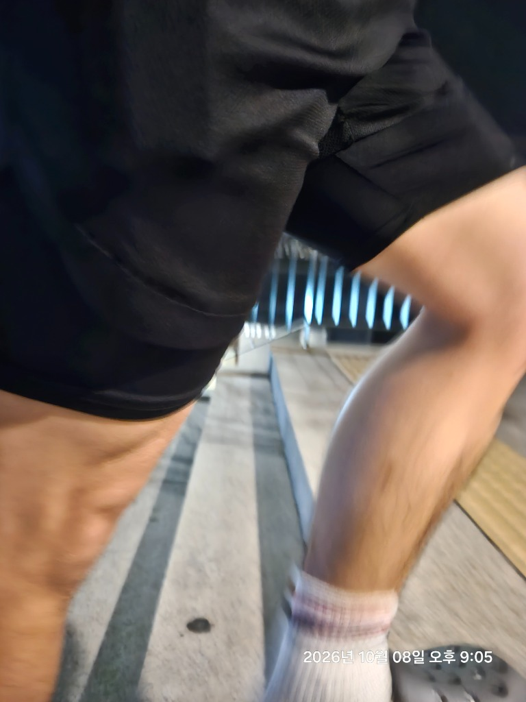

러너들이 다치는 가장 큰 이유는 앞으로 차고 나가는 힘이 부족해서가 아니라, 발이 땅에 닿을 때 내 몸무게의 3배나 되는 충격을 천천히 버텨 주는 힘이 약하기 때문입니다. 아파트 계단 끝을 이용해 종아리와 허벅지, 힘줄을 튼튼하게 만드는 3가지 계단 운동을 쉽게 알아봅니다.

📸 5,000km 러너의 실전 사진: 달리기 전후에 아파트 계단 끝을 이용해 종아리와 허벅지 힘을 기르는 모습. 뒤꿈치를 계단 아래로 천천히 내리며 아킬레스건을 튼튼하게 만듭니다.
1. 왜 '천천히 내려가며 버티는 운동'이 부상을 막아줄까요?
우리 근육은 크게 두 가지 방식으로 일을 합니다.
- 줄어들며 힘쓰기: 계단을 올라가거나 까치발을 들 때처럼 근육이 짧아지며 힘을 냅니다.
- 늘어나며 버티기: 발이 땅에 닿을 때 무릎이 살짝 굽혀지거나 뒤꿈치가 내려가면서, 근육이 길게 늘어난 채 브레이크를 걸어 충격을 받아냅니다.
달리기를 하다가 생기는 무릎 통증, 정강이 통증, 아킬레스건 통증은 대부분 이 '브레이크를 거는 힘'이 부족해서 생깁니다. 그래서 헬스장에서 무릎을 펴는 운동만 하기보다, 근육이 늘어나면서 천천히 체중을 버티는 연습을 해야 다치지 않고 오래 달릴 수 있습니다.
2. 계단에서 바로 따라 하는 3가지 보강운동
1. 계단 뒤꿈치 내리기
• 어디에 좋나요: 아킬레스건과 종아리
• 하는 법: 계단 끝에 발 앞쪽만 걸치고 두 발로 올라선 뒤, 한 발은 떼고 한쪽 발로만 3초에 걸쳐 천천히 뒤꿈치를 아래로 내립니다.
• 포인트: 올라올 때는 두 발로 편하게 올라오고, 내려갈 때만 한 발로 천천히 버티는 것이 중요합니다. (15번 × 3세트)
2. 한 발로 계단 천천히 내려가기
• 어디에 좋나요: 무릎 앞쪽과 허벅지
• 하는 법: 계단 위에 한 발로 서서, 반대쪽 발뒤꿈치를 아래 계단 바닥에 4초 동안 아주 천천히 내리며 살짝 찍고 다시 올라옵니다.
• 포인트: 버티는 쪽 무릎이 안쪽으로 꺾이지 않도록 발끝 방향과 나란히 맞추세요. (10번 × 3세트)
3. 무릎 구부리고 뒤꿈치 내리기
• 어디에 좋나요: 종아리 깊은 속 근육
• 하는 법: 무릎을 살짝(20~30도) 구부린 채 계단 끝에서 1번처럼 뒤꿈치를 천천히 내립니다.
• 포인트: 무릎을 구부리면 달릴 때 충격을 가장 많이 받아 주는 종아리 깊은 근육을 집중해서 단련할 수 있습니다.
3. 왜 힘줄이 실제로 튼튼해질까요?
아킬레스건이나 무릎 힘줄은 피가 적게 통하는 곳이라, 그냥 쉬기만 하면 상처 난 부위가 뻣뻣하게 굳기 쉽습니다. 계단에서 천천히 체중을 실어 늘려 주면 힘줄이 적당한 자극을 받아 탄력 있고 가지런한 결로 다시 튼튼해집니다.
4. 일주일에 두 번, 언제 하면 좋을까요?
- 달리기 끝난 직후를 추천합니다: 몸이 따뜻하게 데워진 달리기 직후에 아파트 계단에서 8~10분만 투자하면 효과가 가장 좋습니다.
- 약간 뻐근한 정도는 괜찮습니다: 운동하는 동안 10점 만점에 2~3점 정도로 살짝 당기고 뻐근한 느낌은 정상입니다. 다만 찌르듯이 날카롭게 아프다면 바로 멈추고 높이를 낮추세요.
🫀 부상 없이 회복하는 내 몸의 안전 심박수는?
무릎과 힘줄에 무리를 주지 않고 편하게 체력을 쌓을 수 있는 나만의 안전한 심박수 구간을 확인해 보세요.
🫀 내 심박수 구간 계산해 보기 ›- Alfredson, H., et al. (1998). Heavy-load eccentric calf muscle training for the treatment of chronic Achilles tendinosis. The American Journal of Sports Medicine, 26(3), 360-366.
- Purdam, C. R., et al. (2004). A pilot study of the eccentric decline squat in the management of patellar tendinopathy. British Journal of Sports Medicine, 38(4), 395-397.
- Feland, J. B., et al. (2001). The effect of eccentric contractions on tendon mechanical properties. Journal of Biomechanics, 34(5), 651-657.